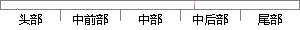

在时差频差联合估计中，可以直接通过互模糊函数搜索峰值的位置来估计时差和频差，但这种方法需要在时域和频域二维空间上进行计算和搜索，计算量很大。
片段位置图

相似结果|
相似片段 1： t 的时差与频差。文献[7]已经证明，互模糊函数法是时差/频差参数的最大似然估计。在时差/频差联合估计中，可以直接通过互模糊函数搜索峰值的位置来估计时差和频差，但这种方法需要在时域和频域二维空间上进行计算与搜索，计算量很大，有必要寻求降低计算量的途径。 根据互模糊函数的性质
|
※ 片段修改建议 ※
近似词参考：- 联合：结合 团结
- 估计：估量 预计
- 通过：经由过程
- 模糊：恍惚 含糊 模胡 依稀 隐约
- 搜索：搜刮 搜寻
- 估计：估量 预计
- 这种：这类
- 需要：必要
- 上进：长进
- 进行：举行
- 计算：计较 较量争论 盘算
- 搜索：搜刮 搜寻
- 计算：计较 较量争论 盘算
系统自动生成语句：在时差频差结合估量中，可以直接经由过程互恍惚函数搜刮峰值的位置来估量时差和频差，但这类方法必要在时域和频域二维空间长进行计较和搜刮，计较量很大。
注：本片段修改建议为系统自动生成，仅供参考。